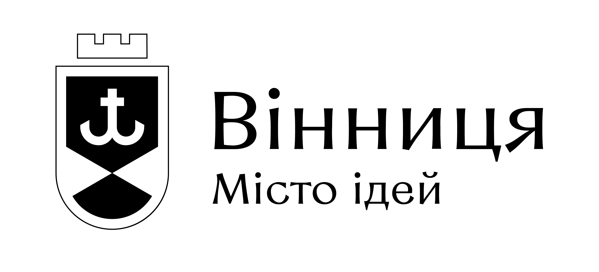
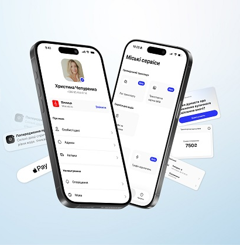

Онлайн-чати
Спілкування з фахівцями з соціальних, адміністративних питань та енергоефективності.
Цифрові помічники Вінниці
Оберіть тему й отримайте консультацію у зручному форматі: у застосунку MISTO, онлайн-чаті, через міську службу або чат-бот.

Отримуйте міські сповіщення, стежте за транспортом, знаходьте укриття, поповнюйте муніципальну картку та користуйтеся онлайн-послугами у смартфоні.

Оберіть тему й отримайте консультацію у зручному форматі: у застосунку MISTO, онлайн-чаті, через міську службу або чат-бот.
Спілкування з фахівцями з соціальних, адміністративних питань та енергоефективності.
Звернення до «Цілодобової варти» щодо комунальних і аварійних ситуацій.
Швидке первинне правниче орієнтування у месенджері Telegram.
Для консультації з фахівцем оберіть відповідний онлайн-чат. Для повідомлень про комунальні й аварійні ситуації звертайтеся до «Цілодобової варти», а для первинної правничої допомоги — до чат-бота «Правничий радник».
Сервіси Вінницької громади
У MISTO зібрані міські сервіси й швидкі переходи до потрібної допомоги. Оберіть напрям відповідно до свого питання.
Пільги, допомоги, компенсації, ветеранська політика та соціальні послуги.
Звернутись в чатіКонсультації щодо послуг ЦНАП «Прозорий офіс», документів та порядку звернення.
Перейти до «Прозорого офісу»Енергоощадні рішення, міські програми підтримки, компенсації та участь у програмах.
Поставити запитанняПовідомлення про аварійні та комунальні ситуації, що потребують реагування міських служб.
Звернутися до службиМіські послуги, звернення, інструменти участі та корисна інформація у Viber і Telegram.
Відкрити чат-ботПервинна безоплатна правнича допомога: пояснення прав, процедур і можливих подальших дій.
Відкрити чат-бот